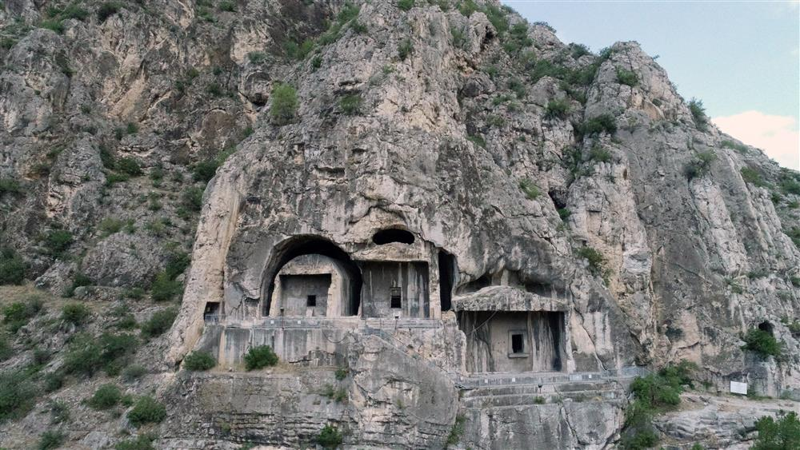
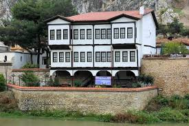

Kültürel Mirasımız
Tarihin ve Bilimin Buluştuğu Nokta: Amasya

Pontus Kral Kaya Mezarları
Amasya Kalesi'nin eteklerinde yükselen bu anıtsal yapılar, Hellenistik Dönem'in en görkemli mezar mimarilerinden biridir. M.Ö. 3. yüzyıldan itibaren Pontus Kralları için inşa edilen bu mezarlar, kayaların içine oyulmuş devasa boşluklar ve arkalarındaki galerilerle dünyada eşine az rastlanır bir mühendislik örneğidir.
Sabuncuoğlu Şerefeddin ve Bimarhane
Amasya, sadece kralların değil, bilimin de merkezidir. 14. yüzyılda inşa edilen Amasya Bimarhanesi, döneminin en ileri tıp merkezlerinden biriydi. Burada görev yapan ünlü hekim Sabuncuoğlu Şerefeddin, cerrahi müdahaleleri ilk kez resimlendirerek anlatan Cerrahiyyetü'l-Haniyye eserini bu şehirde kaleme almıştır.
Tedavi Yöntemleri ve Miras
Müze günümüzde, o dönem uygulanan ilginç ve ileri seviye tedavi yöntemlerini sergilemektedir:
- Müzik Terapi: Ruhsal hastalıkların su sesi ve müzik makamlarıyla tedavisi.
- Fitoterapi: Şifalı bitkilerden hazırlanan özel macunlar ve ilaçlar.
- Cerrahi Teknikler: Kendi icadı olan cerrahi aletler ve yöntemler.

Yalıboyu Evleri ve Hazeranlar Konağı
Yeşilırmak boyunca inci gibi dizilen Amasya Evleri, 19. yüzyıl Osmanlı sivil mimarisinin en zarif örneklerini sunar. Bu evlerin en görkemlisi olan Hazeranlar Konağı, 1865 yılında inşa edilmiş olup, dönemin yaşam kültürünü, estetik anlayışını ve aile yapısını günümüze taşır. Günümüzde Etnografya müzesi olarak halka açıktır.Hazeranlar Konağı'nda teşhir edilen eserler arasında 19.yüzyıl yaşantısını yansıtan giysiler, halı ve kilimler, konakta kullanılan günlük mutfak eşyaları ve kadın ziynet eşyaları gibi malzemeler yer almaktadır. Etnoğrafik eserler arasında, özellikle kitabeli olan halılar, bindallılar, gümüş takılar ve altın renkli sırma işlemeler dönemin özelliklerini yansıtması açısından önemlidir.
Mimari Kimlik
Bu yapılar sadece birer konut değil, aynı zamanda mühendislik ve doğa ile uyumun simgesidir:
- Hımış Tekniği: Ahşap karkas arası kerpiç dolgu.
- Cumba: Sokağa taşan karakteristik çıkmalar.
- Haremlik-Selamlık: Geleneksel iç mekan düzeni.
- Manzara: Irmağa dönük geniş pencereler.
"Amasya'nın bu tarihi evleri, arkasındaki antik kayalarla bütünleşerek dünyada eşine az rastlanan bir şehir peyzajı oluşturur."